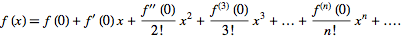
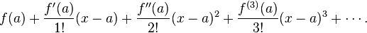
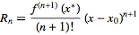

To approximate a transcendental function, we create n
th degree polynomial functions that match the n
th derivatives of the transcendental.
MacLaurin Polynomial:
- Centered around x = 0
- 
Taylor Polynomial:
- Centered around x = a
- 
Error:
The MacLaurin or Taylor approximation will will be no more than R
n off from the actual value.

This is also called the LaGrange error.